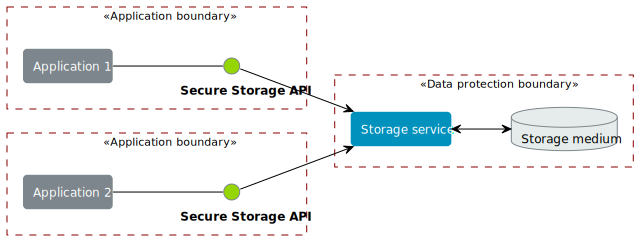
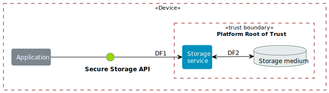
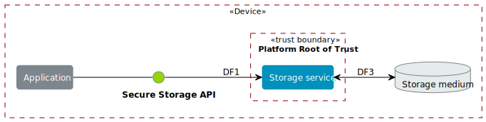
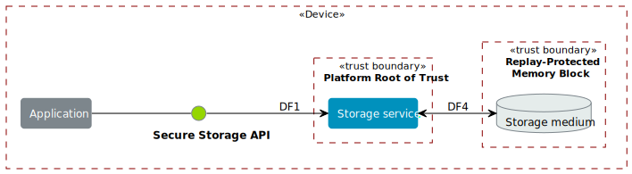
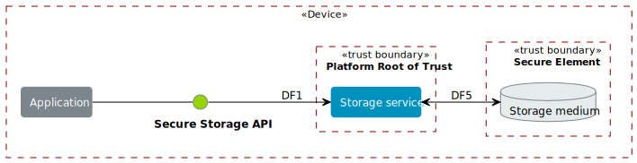

This appendix provides a Security Risk Assessment (SRA) of the Secure Storage API and of a generic implementation of storage.
It describes the threats presented by various types of adversaries against the security goals for an implementation of a secure storage service, and mitigating actions for those threats.
This SRA analyses the security of the Secure Storage API itself, and of the conceptual architectures for storage, not of any specific implementation of the API, or any specific use of the API.
It does, however, divide implementations into four deployment models representing common implementation types, and looks at the different mitigations needed in each deployment model.
In this SRA:
Storage service means the firmware implementing the Secure Storage API.
Storage medium refers to the physical storage location.
Our risk ratings use an approach derived from NIST Special Publication 800-30 Revision 1: Guide for Conducting Risk Assessments[SP800-30]: for each Threat, we determine its Likelihood and the Impact.
Each is evaluated on a 5-level scale, as defined in Table 6 and Table 7.
The damage will have a noticeable effect, such as degrading some functionality, but won’t degrade completely the use of the considered functionality.
There would be a CVE at most.
High
The damage will have a strong effect, such as causing a significant reduction in its functionality or in its security guarantees.
Security Analysts would discuss this at length, there would be papers, blog entries.
Partners would complain.
Very High
The damage will have critical consequences — it could kill the feature, by affecting several of its security guarantees.
It would be quite an event.
Partners would complain strongly, and delay or cancel deployment of the feature.
For both Likelihood and Impact, when in doubt always choose the higher value.
These two values are combined using Table 8 to determine the Overall Risk of a Threat.
Threats are handled starting from the most severe ones.
Mitigations will be devised for these Threats one by one (note that a Mitigation may mitigate more Threats, and one Threat may require the deployment of more than one Mitigation to be addressed).
Likelihood and Impact will be reassessed assuming that the Mitigations are in place, resulting in a Mitigated Likelihood (this is the value that usually decreases), a Mitigated Impact (it is less common that this value will decrease), and finally a Mitigated Risk.
The Analysis is completed when all the Mitigated Risks are at the chosen residual level or lower, which usually is Low or Very Low.
The Mitigating actions that can be taken are defined in the acronym CAST:
Control: Put in place steps to reduce the Likelihood and/or Impact of a Threat, thereby reducing the risk to an acceptable level.
Accept: The threat is considered to be of acceptable risk such that a mitigation is not necessary or must be accepted because of other constraint or market needs.
Suppress: Remove the feature or process that gives rise to the threat.
Transfer: Identify a more capable or suitable party to address the risk and transfer the responsibility of providing a mitigation for the threat to them.
The Secure Storage API separates the software responsible for providing the security of the data from the caller.
The storage service calls on firmware that provides low level reads and writes of non-volatile storage medium and the access to any required bus.
The Secure Storage API is to provide a consistent interface, so that applications do not need to account for the different low-level implementations.
This analysis does not address the engineering requirements to create a reliable storage medium from the underlying physical storage.
It is assumed that the implementation will use the standard techniques, error correcting codes, wear levelling and so on, to ensure the storage is reliable.
Figure 2 Device lifecycle of a system providing storage¶
The storage service, and the Secure Storage API are active during the operational phase, implemented within the boot-time and run-time software.
Within a boot session, it is the responsibility of the secure boot firmware to:
Set up the isolation barriers between partitions.
Provision the firmware implementing the storage service.
Provision the credentials for authorizing the storage of data.
Enable or disable debug facilities.
This SRA only considers threats to the storage service in its operational phase.
The security of the boot process and of any data provisioning service are not considered in this SRA.
Figure 3 shows all of the main components in the storage service.
Presenting the context in which the Secure Storage API operates aids understanding of the threats and security mitigations and provides justification for some of the aspects of the API design.

Figure 3 Trust boundaries of a system providing storage¶
Secure Storage API is a C language API.
Therefore, any implementation of the API must execute, at least partially, within the context of the caller.
When an implementation includes a trust boundary, the mechanism and protocol for communication across the boundary is not defined by this specification.
The operational dataflow diagram is reproduced for each of the deployment models.
Although the dataflow itself is common to the models, the placement of trust boundaries is different.
It is helpful to visualize the effect of these differences on the threats against the dataflows.
The storage service and all physical storage is within the Platform Root of Trust (PRoT) partition.
The PRoT partition has sole access to an area of non-volatile storage, thus that storage cannot be accessed by any other partition or any other means.
This means that the storage service, any driver code, the storage service and storage medium all reside with the PRoT and are protected by the PRoT’s isolation mechanisms as shown in Figure 4.

Figure 4 Trust boundaries in the deployment model DM.PROTECTED¶
The storage service is the arbitrator of access from different applications and manages all data accesses (write, update and deletion).
Therefore, the storage service is responsible for the SG.CONFIDENTIALITY, SG.INTEGRITY and SG.CURRENCY goals of each caller, including maintaining confidentiality between different callers.
An example of this deployment model is the use of on-chip flash or OTP with an access control mechanism such as a Memory Protection Unit.
DM.EXPOSED
The PRoT partition does not have sole access to the area of non-volatile storage, thus the storage medium can be read or written by another partition or by other means.
This means that the driver code, or the storage medium resides outside the PRoT and is accessible to other partitions or by other means, as shown in as shown in Figure 5.
Therefore, attackers can bypass the storage service.

Figure 5 Trust boundaries in the deployment model DM.EXPOSED¶
The storage service is the arbitrator of access from different applications and manages accesses that write, update, and delete data.
Therefore, the storage service is responsible for the SG.CONFIDENTIALITY, SG.INTEGRITY and SG.CURRENCY goal with respect to preventing access by a different caller.
The storage service cannot prevent other partitions or other means from reading or writing the storage, or accessing the link DF3.
Therefore, the storage service is responsible for the SG.CONFIDENTIALITY, SG.INTEGRITY and SG.CURRENCY goals.
An example of this deployment model is the use of a file system on a flash chip.
DM.AUTHORIZED
There is a separate isolated storage medium that can only be accessed in response to an authenticated command and from which all replies include a means for verification of the response, as shown in Figure 6.
The isolation guarantees that there is no access to the storage medium other than by using the authentication mechanism.

Figure 6 Trust boundaries in the deployment model DM.AUTHORIZED¶
The storage service is the arbitrator of access from different applications and manages those data accesses (write, update and deletion).
Therefore, the storage service is responsible for the SG.CONFIDENTIALITY goal with respect to preventing access by a different caller.
The authorization and verification mechanism provided by the storage medium controls access to data (reads, writes and modification).
Therefore, the storage medium is responsible for the SG.INTEGRITY and SG.CURRENCY goals.
Attacks on these mechanisms are out of scope.
However, the communication between the storage service and the storage medium is observable by other partitions and any other means as any data sent in plain text can be observed.
Therefore, the storage service is responsible for SG.CONFIDENTIALITY.
The storage service and the storage medium are jointly responsible for protecting the assets required to authorize commands.
Attacks on the storage service that expose these assets are in scope.
An example of this deployment model is the use of an RPMB memory block.
DM.SECURE_LINK
There is a separate isolated storage medium that can only be accessed across a cryptographically protected secure channel as shown in Figure 7.
The secure channel protocol provides authentication, confidentiality and integrity of data in transit.
The isolation guarantees that there is no access to the storage medium other than by using this channel.

Figure 7 Trust boundaries in the deployment model DM.SECURE_LINK¶
The storage service is the arbitrator of access from different applications and manages those data accesses (write, update and deletion).
Therefore, the storage service is responsible for the SG.CONFIDENTIALITY goal with respect to preventing access by a different caller.
The authorization and verification mechanism provided by the secure channel protocol controls access to data (reads, writes and modification).
Therefore, the storage medium is responsible for the SG.INTEGRITY and SG.CURRENCY goals.
Attacks on the storage medium are out of scope.
The communication between the storage service and the storage medium is protected from observation by other partitions and other means as the data is sent in encrypted form over the secure channel.
Attacks on the secure channel protocol are out of scope.
The storage service uses the secure channel protocol, the storage service and the storage medium are jointly responsible for protecting the assets required to set up the channel.
Attacks on the storage service that expose these assets are in scope.
An example of this deployment model is the use of a Secure Element, or a secure flash device.
Implementations can isolate the storage service from the caller and can further isolate multiple calling applications.
Various technologies can provide protection, for example:
Process isolation in an operating system.
Partition isolation, either with a virtual machine or a partition manager.
Physical separation between execution environments.
The mechanism for identifying callers is beyond the scope of this specification.
An implementation that provides caller isolation must document the identification mechanism.
An implementation that provides caller isolation must document any implementation-specific extension of the API that enables callers to share data in any form.
In summary, there are three types of implementation:
No isolation: there is no security boundary between the caller and the storage service.
For example, a statically or dynamically linked library is an implementation with no isolation.
As the caller is in the same security domain as the storage, the API cannot prevent access to the storage medium that does not go through the API.
Simple Isolation: A single security boundary separates the storage service from the callers, but there is no isolation between callers.
The only access to stored data is via the storage service, but the storage service cannot partition data between different callers.
Caller isolation: there are multiple caller instances, with a security boundary between the caller instances among themselves, as well as between the storage service and the caller instances.
For example, a storage service in a multiprocessor environment is an implementation with caller isolation.
The only access to the stored data is via the storage service and the storage service can partition stored data between the different callers.
B.2.5 Assumptions, constraints, and interacting entities¶
This SRA makes the following assumptions about the Secure Storage API design:
The API does not provide arguments that identify the caller, because they can be spoofed easily, and cannot be relied upon.
It is assumed that the implementation of the API can determine the caller identity, where this is required.
See Optional isolation.
The Platform Security Model[PSM] assumes that at least the code in the Root of Trust partitions (PRoT and ARoT) are verified at boot, and on any update.
Therefore, it is assumed that this code is trustworthy.
If any malicious code can run in the RoT partitions, it has achieved full control.
For the purposes of this analysis, it is assumed that in deployment models DM.AUTHORIZED and DM.SECURE_LINK, there is no way to access the stored data without going through the authenticated channel.
That is, an attack that would expose the physical storage medium is beyond the resources of the attacker.
The analysis ignores attacks that only result in a denial of service.
There are many ways an attacker can deny service to the complete system, with or without involving the storage service.
The analysis only looks at an active attack.
However, data is also subject to accidental modification, for example from cosmic radiation causing a bit flip.
Therefore, standard engineering practice — such as use of error correcting codes — should be taken to protect data.
This analysis looks at the security from the point of view of the applications that call on the service to store data, and on the overall system.
The following assets are considered in this assessment:
Data to be stored
The purpose of a storage service is to securely store data for its callers.
Caller Identities
To ensure that data stored for one caller is not revealed to a different caller, each caller must have a unique identity.
Implementation Secrets
If in order to secure the data, the storage service uses encryption keys for confidentiality and integrity, these mut be considered assets of the storage service.
An adversary is unable to disclose Stored Data that belongs to a different Stored Data Owner.
A legitimate owner can guarantee their data has not been exposed.
SG.INTEGRITY
An adversary is unable to modify Stored Data that belongs to a different Stored Data Owner, to a value that was not previously stored by the Stored Data Owner.
A legitimate owner can guarantee that data returned is a value they have stored.
SG.CURRENCY
An adversary is unable to modify Stored Data that belongs to a different Stored Data Owner.
The legitimate owner can guarantee that data returned is the most recent value that have stored.
Adversarial models are descriptions of capabilities that adversaries of systems implementing the Secure Storage API can have, grouped into classes.
The adversaries are defined in this way to assist with threat modelling an abstract API, which can have different implementations, in systems with a wide range of security sensitivity.
AM.0
The Adversary is only capable of accessing data that requires neither physical access to a system containing an implementation of the feature nor the ability to run software on it.
This Adversary is intercepting or providing data or requests to the target system via a network or other remote connection.
For instance, the Adversary can:
Read any input and output to the target through external apparatus.
Provide, forge, replay or modify such inputs and outputs.
Perform timings on the observable operations being done by the target, either in normal operation or as a response to crafted inputs.
For example, timing attacks on web servers.
AM.1
The Adversary can additionally mount attacks from software running on a target processor implementing the feature.
This type of Adversary can run software on the target.
For instance, the Adversary can:
Attempt software exploitation by running software on the target.
Exploit access to any memory mapped configuration, monitoring, debug register.
Mount any side channel analysis that relying on software-exposed built-in hardware features to perform physical unit and time measurements.
Perform software-induced glitching of resources such as Rowhammer, RASpberry or crashing the CPU by running intensive tasks.
AM.2
In addition to the above, the Adversary is capable of mounting hardware attacks and fault injection that does not require breaching the physical envelope of the chips.
This type of Adversary has access to a system containing an implementation of the target feature.
For instance, the Adversary can:
Conduct side-channel analysis that requires measurement equipment.
For example, this can utilize leakage sources such as EM emissions, power consumption, photonics emission, or acoustic channels.
Plug malicious hardware into an unmodified system.
Gain access to the internals of the target system and interpose the SoC or memory for the purposes of reading, blocking, replaying, and injecting transactions.
Replace or add chips on the motherboard.
Make simple, reversible modifications, to perform glitching.
AM.3
In addition to all the above, the Adversary can perform invasive SoC attacks.
For instance, the Adversary can:
Decapsulate a chip, via laser or chemical etching, followed by microphotography to reverse engineer the chip.
Use a focused ion beam microscope to perform gate level modification.
The adversarial models that are in scope depend on the product requirements.
To ensure that the Secure Storage API can be used in a wide range of systems, this assessment considers adversarial models AM.0, AM.1, and AM.2 to be in-scope.
Code in the RoT partitions is assumed to be trustworthy — and any untrustworthy code running in PRoT partitions already has complete control of the target — therefore, in AM.1 this SRA only considers threats from malicious actors running in Non-secure Processing Environment.
Because Secure Storage API can be used in a wide range of deployment models and a wide range of threats, not all mitigating actions apply to all deployment models.
As a result, various mitigations are optional to implement, depending on which threats exist in a particular domain of application, and which deployment model is used.
B.3.1 T.INTERFACE_ABUSE: Illegal inputs to the API¶
Description: An attacker can abuse the Secure Storage API.
For example:
Passing out of range values to the interface to provoke unexpected behavior of the implementation.
Passing invalid input or output buffers to the interface, that would cause the implementation to access non-existent memory, or memory that is inaccessible to the caller — including accessing assets of the storage service.
M.ValidateParameter.
Transfer to the implementation: check all API parameters to lie within valid ranges, including memory access permissions.
M.MemoryBuffer.
Control by API design: input buffers are fully consumed by the implementation before returning from a function.
An implementation must not access the caller’s memory after a function has returned.
Residual Impact
Very High
Residual Likelihood
Very Low
Residual Risk
Low
B.3.2 T.SPOOF_READ: Use the API to read another caller’s data¶
Description: In all deployment models, an attacker attempts to read data stored for another caller using the Secure Storage API.
The API does not require that the names used by caller for stored data are globally unique, only unique within that caller’s namespace.
M.ImplicitIdentity.
Control by API design: caller identity is not provided by the caller to the API.
If caller identity is supplied by the caller in the API, the identity can be spoofed by another caller.
Using authentication credentials only moves the problem of storing secrets, but does not solve it.
Transfer to the implementation: provide caller identities, to isolate data that belongs to different callers.
The assurance that the storage service can give is limited by the assurance that the implementation can give as to the identity of the caller.
Where each user runs in a separate partition, the identity can be provided by the partition manager.
Where different users run within a single partition, Transfer the responsibility for separating users within that partition to the operating system or run time within that partition.
M.FullyQualifiedNames.
Transfer to the implementation: use a fully-qualified data identifier, that is a combination of an owner identity and the item UID.
The implementation must used the owner identity to ensure that a data request to the storage service does not return data of the same UID, that was stored by a different caller.
The storage service must also ensure that if a data item with the fully-qualified identifier does not exist, the implementation returns the correct error.
Residual Impact
Very High
Residual Likelihood
Very Low
Residual Risk
Low
B.3.3 T.SPOOF_WRITE: Use the API to modify another caller’s data¶
Description: In all deployment models, an attacker attempts to write data to a file belonging to another caller using the Secure Storage API or create a new file in a different caller’s namespace.
This threat is the counterpart to T.SPOOF_READ except that the attacker tries to write data rather than read.
It is therefore subject to the same analysis.
Description: An attacker accesses data in transit, either between the caller and the storage service, or between the storage service and the storage medium.
In all deployment models, by the definition of an isolated partition in the Platform Security Model[PSM], transfer within the partition, and transfers between one Secure Partition and another are isolated from eavesdroppers.
Therefore, if the caller is in a Secure Partition, there is no possibility of an eavesdropper accessing the data.
However, if data is sent or returned to a caller in the Non-secure Processing Environment (NSPE), although the data is securely delivered to the NSPE, it is exposed to all users in the NSPE.
As previously noted, the implementation transfers the duty of separating users in the NSPE to the OS.
For deployment model DM.PROTECTED, the storage service and the storage medium are isolated.
In DM.EXPOSED, any adversary that can obtain operating system privileges in the NSPE will have access to all the memory and will therefore be able to eavesdrop on all data in transit.
An attacker that is external to the processor, AM.2, will be able to exploit an eavesdropping attack if the bus to which the memory is attached is accessible via external pins.
Otherwise, the attack is limited to internal attackers AM.1.
In DM.AUTHORIZED, an attacker with access to the bus, or to intermediate data buffers, can eavesdrop and obtain the messages.
In DM.SECURE_LINK, an attacker can only eavesdrop on any data transfer not protected by the secure channel.
n/a — except for transfer of data to clients in the NSPE
Very High
High
High
Unmitigated Risk
n/a
Very High
Very High
Very High
Mitigating Actions
M.Encrypt.
Transfer to the implementation: for DM.EXPOSED and DM.AUTHORIZED, the data at rest must be encrypted.
The storage service must apply the encryption to the data before it leaves the PRoT partition.
The encryption mechanism chosen must be sufficiently robust.
The key used for encryption must be sufficiently protected, that is, it must only be available to the storage service.
M.PRoTRootedSecLink.
Transfer to the implementation: for DM.SECURE_LINK, communication with the storage medium must be over a well-designed secure channel.
If the secure channel is not rooted in the PRoT then any adversary in the partition (AM.1), or with access to the partition (AM.2), in which the channel terminates will be able to eavesdrop on traffic leaving the PRoT before it is encrypted.
The secure channel must be rooted within the PRoT.
However, the stored data does not need to be separately encrypted beyond the protection provided by the secure channel.
The private information required to establish the channel must be suitably protected by both the storage service and the storage medium.
M.UseSecurePartitions.
Transfer to the application: for all deployment models, place callers that handle sensitive data into separate partitions.
To ensure that an attacker in the NSPE cannot access the data sent by the caller to the storage service, or the replies the storage service returns to the caller, place all code that needs to use the storage service into one or more Secure Partition, with one partition per service.
Description: An attacker can actively interfere with communication and replace the transmitted data.
In this threat the SRA only considers attackers between the storage service and the storage medium.
An attacker interposing between the Caller and the storage service is considered under T.SPOOF_READ or T.SPOOF_WRITE.
For DM.PROTECTED, the storage service and the storage medium are isolated.
For DM.EXPOSED, any code running in the NSPE has access to the storage medium and any driver firmware, and therefore can act as a man in the middle, by for example persuading the storage service to write to one buffer, and the storage medium to read from another.
For DM.AUTHORIZED, a man in the middle eavesdrops on data in transit.
For DM.SECURE_LINK, a naive secure channel is vulnerable to a man in the middle attack.
M.Encrypt.
Transfer to the implementation: if data is encrypted, a man in the middle cannot know what data is being transferred.
It also means they cannot force a specific value to be stored.
M.MAC.
Transfer to the implementation: for DM.EXPOSED, apply a Message Authentication Code or a signature to the stored data, or use an authenticated encryption scheme. If the storage service checks the MAC or tag when data is read back from the storage medium to detect unauthorized modification.
M.UniqueKeys.
Transfer to the implementation: for DM.AUTHORIZED and DM.SECURE_LINK, use unique keys for securing the authenticated or secure channel.
If the keys used by the storage medium are unique to each instance, as an attacker can only learn the key used on this specific instance.
They cannot construct a class break by discovering the key for every instance.
M.VerifyReplies.
Transfer to the implementation: for DM.AUTHORIZED, commands and replies are authenticated by the storage medium.
Therefore, the man in the middle cannot forge a valid reply which indicates that the data has been stored when it has not.
If the storage service validates replies from the storage medium, it can verify that the data it sent was correctly stored, and the data retrieved is the value previously stored.
M.AuthenticateEndpoints.
Transfer to the implementation: for DM.SECURE_LINK, use mutual authentication of the storage service and storage medium when setting up the secure channel.
For example, this can be achieved by using a single key, known only to both parties.
M.ReplayProtection.
Transfer to the implementation: for DM.AUTHORIZED and DM.SECURE_LINK, use replay protection in the communication protocol.
This can be achieved by including a nonce in the construction of protocol messages.
This enables the storage medium to detect attempts to replay previous commands and reject them.
Residual Impact
Very High
Very High
High
High
Residual Likelihood
n/a
Very Low
Very Low
Very Low
Residual Risk
n/a
Low
Low
Low
B.3.6 T.DIRECT_READ: Bypassing the API to directly read data¶
Description: An attacker might be able to read stored data through a mechanism other than the API.
In DM.PROTECTED, no attacker should be able to access the stored data.
In DM.AUTHORIZED, the attacker cannot form valid requests to access data.
It can, however, eavesdrop on a legitimate request and replay it later.
In DM.SECURE_LINK, the attacker cannot form valid requests to access data.
It can, however, eavesdrop on a legitimate request and even if it cannot understand it, it could replay it later.
B.3.7 T.DIRECT_WRITE: Bypassing the API to directly modify data¶
Description: An attacker might be able to modify data stored for another caller.
In DM.PROTECTED, no attacker should be able to access the stored data.
In DM.EXPOSED, the SRA assumes that any attacker capable of running code in the NSPE can modify the stored data.
However, assuming it is encrypted, the attacker cannot create the correct ciphertext for chosen plain text.
In DM.AUTHORIZED, although the attacker cannot form a valid command, the attacker can eavesdrop on a legitimate request and replay it later.
In DM.SECURE_LINK, although the attacker cannot form a valid command, the attacker can eavesdrop on a legitimate request and replay it later.
M.Encrypt.
Transfer to the implementation: encrypted data cannot be modified to an attacker-chosen plaintext value.
However, an attacker can still corrupt the stored data.
M.MAC.
Transfer to the implementation: for DM.EXPOSED, integrity-protect the stored data using a MAC, signature, or AEAD scheme.
The verification of data integrity must be implemented within the storage service in the PRoT, otherwise the result could be spoofed.
M.ReplayProtection.
Transfer to the implementation: for DM.AUTHORIZED and DM.SECURE_LINK, if the channel protocol includes replay protection, the storage medium will check the nonce for freshness, and prevent replay of old messages.
M.AntiRollback.
Transfer to the implementation: in DM.EXPOSED, M.MAC is insufficient to prevent an attacker from replacing one version of stored data — or the entire contents of the storage medium — with a previously stored version.
The previously stored data would pass the integrity checks.
To prevent this attack, the storage service must keep some authentication data in a location the attacker cannot access.
This location could be stored within the PRoT partition, that is using the DM.PROTECTED, or in a separate secure enclave using the deployment model DM.AUTHORIZED or DM.SECURE_LINK.
The data could be the root of a hash tree, or it could be a counter used with a root key to generate a version-specific MAC key.
In the case of a counter, some consideration should be given to the expected number of updates that will be made to the data.
If the implementation only needs to offer rollback protection on firmware updates, where a low number is expected in the lifetime of the product and the counter could be stored in fuse.
If the implementations needs to ensure the currency of a file store that is regularly updated — the number of updates could exhaust any practical number of fuses and would instead need a 32-bit counter.
Residual Impact
Very High
Very High
High
High
Residual Likelihood
n/a
Very Low
Very Low
Very Low
Residual Risk
n/a
Low
Low
Low
B.3.8 T.REPLACE: Physical replacement of the storage medium¶
Description: An attacker might physically replace the storage medium.
For DM.PROTECTED, it is not possible to replace the storage.
For DM.EXPOSED, if the storage medium is integrated with the chip, it is not possible to replace the storage.
But in many systems, the storage medium will be on a separate device.
M.UniqueKeys and M.MAC.
Transfer to the implementation: for DM.EXPOSED, use device-specific secret keys to authenticate the stored data.
With unique authentication keys, data stored on one device cannot be verified on another device.
M.UniqueKeys and M.VerifyReplies.
Transfer to the implementation: for DM.AUTHORIZED and DM.SECURE_LINK, use device-specific secret keys to authenticate the communication between the storage service and storage medium.
In DM.AUTHORIZED, the attacker will not be able to find a new instance of the storage medium that can form the correct responses to commands.
In DM.SECURE_LINK, the attacker will not be able to find a new instance of the storage medium that can complete the handshake to set up the secure channel.
Description: An attacker with physical access might be able to disrupt the power or clock to cause a misread.
In this threat, an attacker with physical access to the device causes a power or frequency glitch to cause a misread.
In particular, it might prevent the storage service from performing the verification of replies or causing it to ignore the result of any check.
Thus, causing the storage service to return an incorrect value to the caller.
M.GlitchDetection.
Transfer to the implementation: for all deployment models, active glitch detection circuits can raise an exception if a glitch is detected, permitting the computing circuitry to take corrective action.
For DM.PROTECTED and DM.EXPOSED, if the implementation applies a MAC, a subsequent read can detect that data had not been written correctly.
However, MAC’s are not error correcting, therefore the implementation can only mark the data as corrupt and the data is lost.
For DM.AUTHORIZED and DM.SECURE_LINK, if the implementation relies on the channel to provide the MAC or tag, there is a brief time of check, time of use (TOCTOU) window, where the storage medium has verified the command but has not written the data to physical storage.
If a glitch occurs in this window, and then a subsequent read occurs, the storage medium will apply a new tag to a reply containing corrupt data, and the storage service will not be aware that that data returned has been corrupted.
However, if the storage service applies a MAC before submitting the command, it can detect, but not correct, this corruption.
M.ErrorCorrectingCoding.
Transfer to the implementation: for all deployment models, if the storage medium uses error correcting codes (ECC), it can detect and correct a certain number of incorrect bits in the data it reads back — at the expense of extra storage.
If the storage medium does not offer ECC capability, the storage service could apply it and verify the coding in software, although this is generally less efficient than hardware.
M.GlitchDetection.
Transfer to the implementation: for all deployment models, glitch detection can reduce the risk of a successful glitch.
M.ReadAfterWrite.
Transfer to the implementation: for all deployment models, perform a checked-read after a write in the storage service.
The storage service can perform a read operation immediately after a write, while it still retains the original value in memory, and compare the two before reporting a successful write.
However, this has performance challenges: therefore, the implementation can decide to do this on a sampling basis.
When using DM.EXPOSED, the implementation must provide a mechanism to prevent an attacker from replacing the stored data with a version that was valid at a previous date.
An attacker can use this attack to reinstate flawed firmware, or to return to a version with a broken credential.
When using DM.EXPOSED or DM.AUTHORIZED, the storage service must encrypt data to be written to storage, and decrypt data read from storage, inside the isolated environment to ensure confidentiality.
In all deployments, the implementation must identify which caller each stored object belongs to and must refer to them internally by the combination of caller identity and name.
Otherwise, it might return a stored object to the wrong caller.
In DM.EXPOSED, the storage service must apply an integrity check, a MAC, signature, or authenticated encryption tag, within the storage service before it is sent to storage.
It must also verify this on every read.
In DM.SECURE_LINK, the storage service must use a secure channel rooted within the isolated environment to ensure there is no opportunity for eavesdropping.
In DM.AUTHORIZED and DM.SECURE_LINK the keys used by the storage service and storage medium must be unique, otherwise there is no mechanism for detecting that the storage medium has been replaced.
In DM.AUTHORIZED and DM.SECURE_LINK the storage service must verify all replies from the partition that implements storage, to ensure that they do indeed come from the expected partition and no errors are reported.
In all deployments, if the caller wants to be certain that there is no chance of eavesdropping, they should make use of caller isolation, with each caller in its own isolated partition.
In implementations DM.PROTECTED and DM.SECURE_LINK, the stored data can be implicitly trusted, and therefore it is not required to be encrypted or authenticated.
There is no more secure location to store verification data, therefore, any attacker able to access the stored data would also be able to access the key.
However, it is possible for the data to be accidentally corrupted, therefore standard engineering practice to guard against this, for example the use of error correcting codes, should be used.
In implementation DM.EXPOSED, the data can be read or modified by an attacker, therefore the storage service must provide confidentiality, integrity, and authenticity by cryptographic means.
The keys used to do this must be stored securely.
This could be a key derived from the HUK, or separately stored in fuse in a location only readable from the PRoT.
As the attacker can always read and modify the stored data, even if they cannot decrypt the data, they can attempt to subvert a change by resetting the storage medium to a prior state.
To detect this, the storage service needs to have some means of authenticating that it is reading the most recent state.
This implies some form of authentication data stored in a location the attacker cannot modify.
In implementation DM.AUTHORIZED, the data can be observed, even if it cannot be modified.
Therefore, data stored does need to be encrypted for confidentiality.
However, provided the authentication protocol is strong, and prevents replay, it should not be possible for an attacker to modify the stored data.
As the store applies a MAC to each reply, the storage service does not need to apply extra integrity.
In implementation DM.SECURE_LINK provided the secure channel is rooted within the PRoT, the data transferred cannot be observed, and any modification will be detected.
Therefore, no further encryption is needed for confidentiality or integrity.